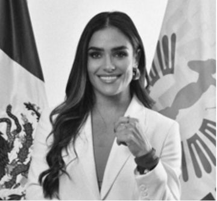

Inicio · 9h20
Alessandra Rojo de la Vega
CDMX
Alcaldesa de Cuauhtémoc desde octubre de 2024. Comunicóloga por la Universidad Iberoamericana, fundó Movimiento Unido por la Infancia y No Es Una Somos Todas. Fue diputada (2018-2021) y directora general de Desarrollo Social en Miguel Hidalgo. Impulsa «el gobierno del cómo sí».